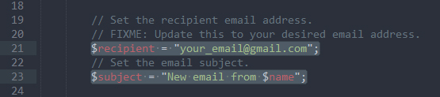
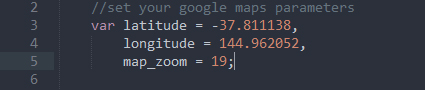
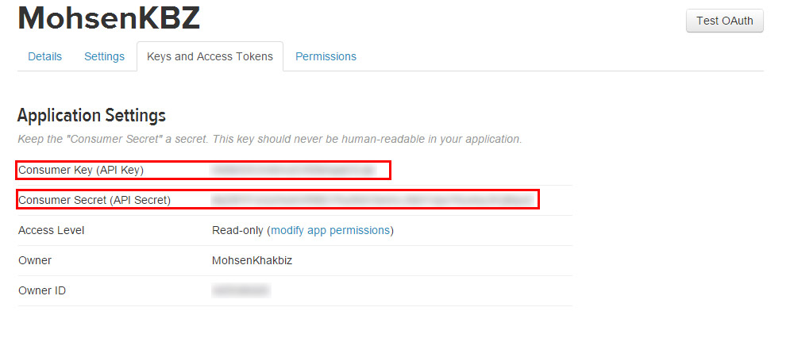
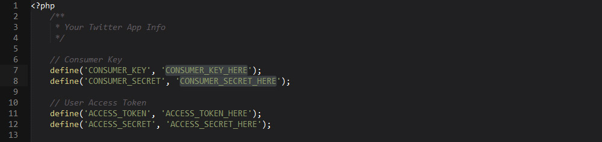
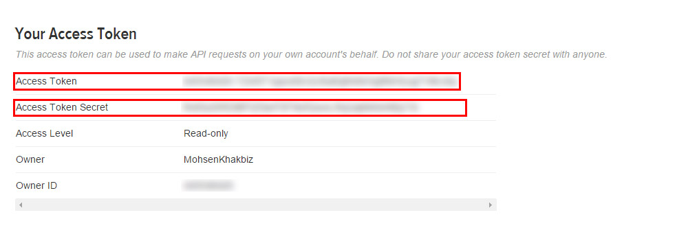
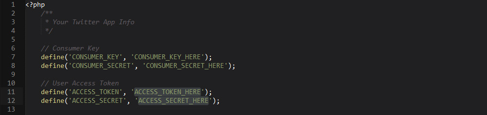
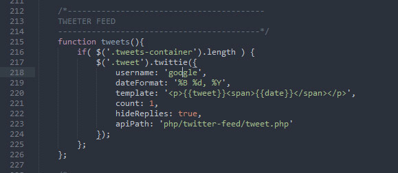
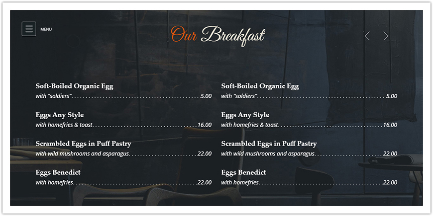
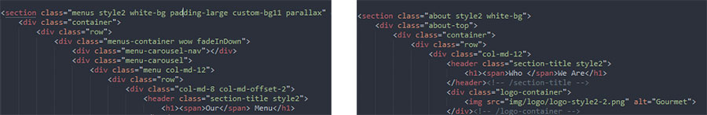
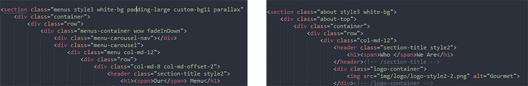

Thank you for purchasing our theme. If you have any questions that are beyond the scope of this help file, please feel free to email via our user page contact form or to our support forum at
Due to local security restrictions, some things will not work locally, especially in Chrome. But everything will work once the files have been updated to your website.
Use Firebug or Chrome Developer Tools.
Do not start from scratch, use an existing page from the demo and modify it to learn how it works.
Getting an error message? Someone might have seen it too, try a google search for a quick fix.
Explore the live demo for pages ideas and sample code.
/HTML
/assets (Plugin assetes)
/css (Template CSS)
/video (All Videos)
/fonts (All fonts used in the template)
/js (Template JS)
/php (PHP Files - I.E: Contact Us form and Twitter feed)
/media (All video and audios which are included with the template)
The template is based on Bootstrap 3 Framework - http://getbootstrap.com
Bootstrap includes a responsive, mobile first fluid grid system that appropriately scales up to 12 columns as the device or viewport size increases.
<div class="row">
<div class="col-md-12">
Level 1 column
<div class="row">
<div class="col-md-6">Level 2</div>
<div class="col-md-6">Level 2</div>
</div>
</div>
</div>
If you need more information, please visit this site: http://getbootstrap.com/css/#grid
Marine Food use Font Awesome and Linecons.
If you need more information, please visit this site: http://fontawesome.io/ and Fontello
Linecons demo is included with the template
<i class="fa fa-edit"></i> <i class="fa fa-search"></i> <i class="icon-diamond"></i> <i class="icon-plane"></i> ...
This is one of the best slider plugins we have seen so far.
"Slider Revolution is a fully developed slide displaying system offering the capability to show images, videos and captions paired with simple, modern and fancy 3D transitions. On top of that, Slider Revolution is fully responsive and mobile optimized and can take on any dimensions."
More details on http://themes.themepunch.com/?theme=revolution_jq
Documentations are included with Marine Food template.
The filter is driven by the Mixitup script - https://mixitup.kunkalabs.com/
Here's an example of usage:
<ul class="category-filter store-category-filter"> <li class="filter active" data-filter="all"><span>All Products</span></li> <li class="filter" data-filter=".main"><span>Mains</span></li> <li class="filter" data-filter=".salad"><span>Salads</span></li> <li class="filter" data-filter=".starter"><span>Starters</span></li> </ul>
<div class="col-md-4 col-sm-6 col-xs-12 mix main">
<div class="store-item">
<figure>
<a href="store-item.html">
<img src="img/gallery/gallery18.jpg" alt="Marine Food Store">
</a>
</figure>
<h3 class="food-name"><a href="store-item.html">Spicy Baked Eggs</a></h3>
<ul class="food-category">
<li>Local</li>
<li>Greens</li>
<li>Eggs</li>
</ul>
<div class="food-order">
<p class="food-price">$19.99</p>
<a href="#" class="add-to-cart-link">Add To Cart</a>
</div><!-- /food-order -->
</div><!-- /store-item -->
</div><!-- /col-md-4 -->
<div class="col-md-4 col-sm-6 col-xs-12 mix starter">
<div class="store-item">
<figure>
<a href="store-item.html">
<img src="img/gallery/gallery19.jpg" alt="Marine Food Store">
</a>
</figure>
<h3 class="food-name"><a href="store-item.html">Grilled Meat with Fruits</a></h3>
<ul class="food-category">
<li>Local</li>
<li>Fruits</li>
<li>Meat</li>
</ul>
<div class="food-order">
<p class="food-price">$34.95</p>
<a href="#" class="add-to-cart-link">Add To Cart</a>
</div><!-- /food-order -->
</div><!-- /store-item -->
</div><!-- /col-md-4 -->
Marine Food using Ajax/PHP contact form. So when contact form is submitted, the page won't be reloaded. Also because it uses PHP so you need to upload the template in a server to get contact form work.
To define recipient email address, go to php/contact.php and find line 21. There you can define your email addres.
Also if you want to define an specefic subject for submitted form in line 23 you can define your subject.
The only thing you need to do to set your location on the map is go to js/cd-google-map.js and find line 3 and 4. There you can set your latitude and longitude. Here is a guide for how to get your location on Google map: https://support.google.com/maps/answer/18539?hl=en
Also in cd-google-map.js you can set your favorite color and do more.
In New version of Gourmet you can use 2 different color scheme for maps by default. The only thing you need is use cd-google-map.js or cd-google-map-brown.js in your page. Thats all
More info on Codyhouse: http://codyhouse.co/gem/custom-google-map/
To bring your twitter feed alive you need to get your own consumer key and secret keys. Go to apps.twitter.com/. Login to your account and hit Create New App button. Fill required fields and hit Create your Twitter application.
Go to Keys And Access Tokens tab. Copy your Consumer Key and Consumer Secret
. Go to php/twitter-feed folder and open config.php. Paste your Consumer Key and Consumer Secret in line 7 and 8.
Scroll down to Your Access Token section. Hit Create my access token button. Copy Access Token and Access Token Secret.
Again open config.php from php/twiter-feed folder. Paste your Access Token and Access Token Secret in line 11 and 12
. If you want to get tweets from another twitter account go to js/main.js, find line 226 and there you can define your target twitter account. Or if you don't need, just remove this line.
For scroll reveals ( Elements animated when they are in the viewport ) we used two great plugins:
1: http://mynameismatthieu.com/WOW/
2: http://scrollme.nckprsn.com/
For more information please visit their websites.
You can add frame around every page you wish. The only thing you need to do is just add a class of frame-on to the body tag
<body class="frame-on">
And you will get a nice frame around your page
Gourmet new version comes with a new skin and new elements. there's no pain for using new skins. You just need to add class of style2 to the element that you wish to change the skin. Just it. Or if you want, just copy the whole page and insert your content.
Please pay attention that some elements have a different structure. So the easiest way is choose your favorite part and copy-paste it where ever you want.
Gourmet new version comes with a new skin and new elements. there's no pain for using new skins. You just need to add class of style3 to the element that you wish to change the skin. Just it. Or if you want, just copy the whole page and insert your content.
Please pay attention that some elements have a different structure. So the easiest way is choose your favorite part and copy-paste it where ever you want.